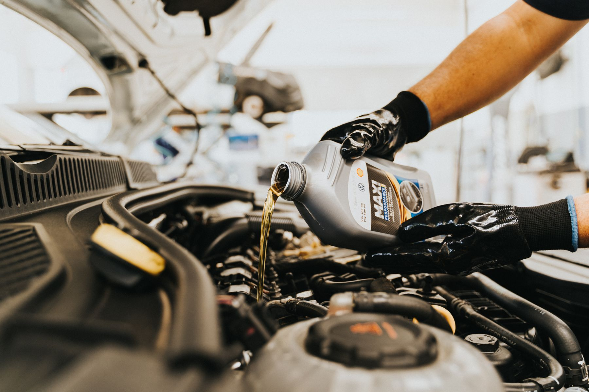
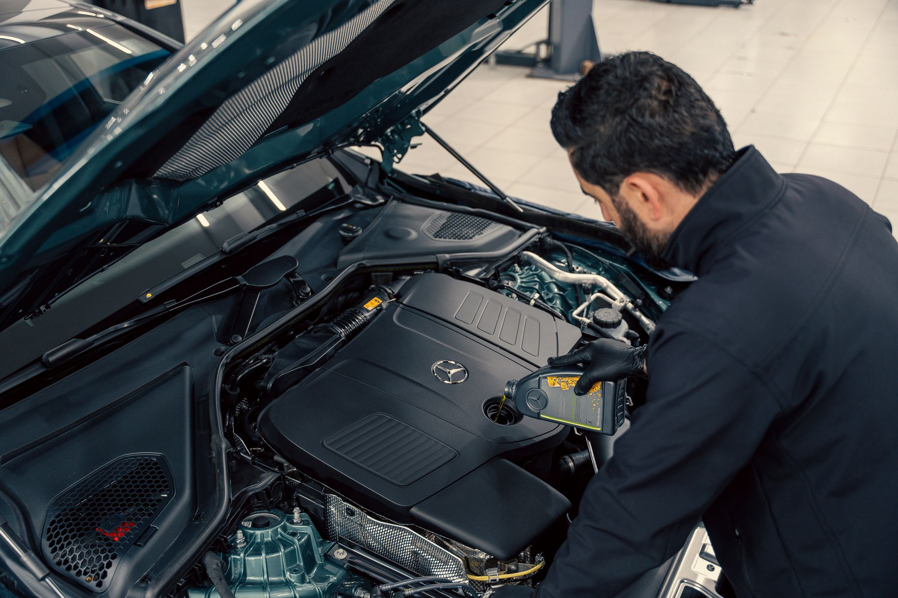

Na Lubrimax, a troca de óleo é rápida e transparente: você acompanha cada etapa, vê as peças trocadas e sai com o registro do serviço.

| Troca do óleo do motor | Usamos o óleo que o fabricante do seu carro recomenda. Se você não sabe qual é, a gente confere pelo modelo e pelo ano. |
| Troca dos filtros | Filtro de óleo, de ar, de combustível e de cabine, com a troca registrada para a próxima revisão. |
| Óleo do câmbio automático | Troca do óleo do câmbio automático com o produto indicado para o seu modelo. |
| Checagem gratuita | Enquanto troca o óleo, a equipe confere fluidos, palhetas e pneus, e avisa se algo precisar de atenção. |
| Atendimento | A troca leva em média 40 minutos, e você pode acompanhar tudo de perto. |
| 1. Você chama a gente no WhatsApp | Mande o modelo e o ano do seu carro. Com isso, a gente já separa o óleo e os filtros certos antes de você chegar. |
| 2. A gente faz a troca com você por perto | Você pode acompanhar o serviço. Explicamos cada etapa e tiramos as suas dúvidas na hora, sem termos complicados. |
| 3. Você vê o que foi trocado | Antes de liberar o carro, mostramos as peças velhas e as novas. Assim você sabe exatamente pelo que está pagando. |

Antes de liberar o carro, mostramos o filtro que saiu e o que entrou, e explicamos o que foi feito. Você vê com os próprios olhos o serviço pelo qual está pagando.
“Troca rápida e bem explicada. Saí sabendo exatamente o que foi trocado no meu carro.”
Cliente · há 2 meses“Me mostraram o filtro velho e o novo antes de fechar o capô. Atendimento sério.”
Cliente · há 5 meses“Preço justo e sem empurrar produto. Usaram o óleo que o manual do carro pede.”
Cliente · há 1 ano“Fiz a troca do óleo do câmbio automático e ficou perfeito. Voltarei.”
Cliente · há 8 meses| Seg a Sex | 07:30 às 18:00 |
| Sábado | 07:30 às 13:00 |
| Domingo | Fechado |
Mande o modelo e o ano do seu carro pelo WhatsApp. A gente já deixa o óleo e os filtros certos separados para a sua troca.
(62) 90000-0000